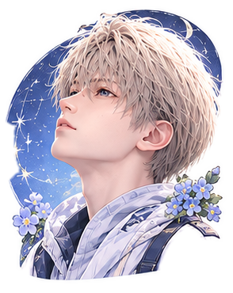
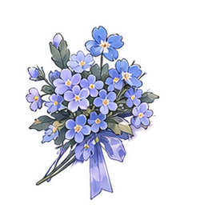
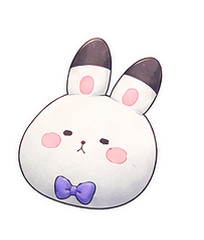

🎹 迷你鋼琴
✨ 準備就緒
🖼️ 背景圖：透光 (38%)
⛶ 全螢幕模式
主題配色:
🌸 蜜桃紫
🌙 星空黑
🍵 薄荷綠
🌅 餘暉金
🌊 琉璃藍
🎨 自選色
演奏設置:
視覺回饋：開
唱名：顯示
延音：關
完整曲庫:
-- 選擇完整樂曲 --
★ 小星星 (完整三段體 A-B-A 全曲)
🐯 兩隻老虎 (四樂句輪唱完整版)
🐝 小蜜蜂 (經典德國民謠完整版)
♫ 給愛麗絲 (貝多芬完整主題與過門再現)
☀️ 歡樂頌 (第九號交響曲第四樂章完整主題)
▶ 播放完整示範
⏹ 停止
實體錄音:
⏺ 開始錄音
▶ 回放錄製
通用匯出:
⬇ 匯出 WAV
⬇ 匯出 MP3
🎬 匯出 MP4 影片

